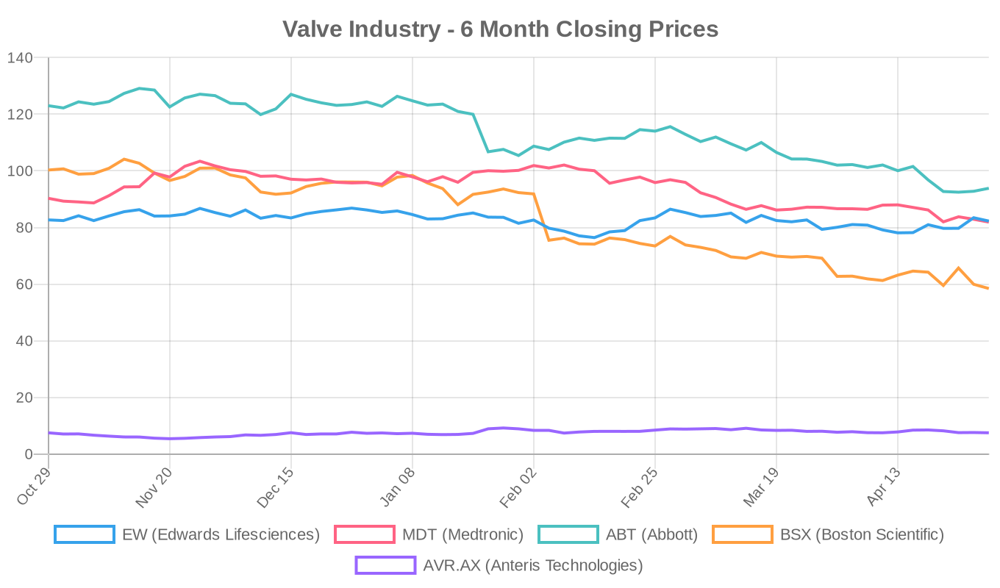
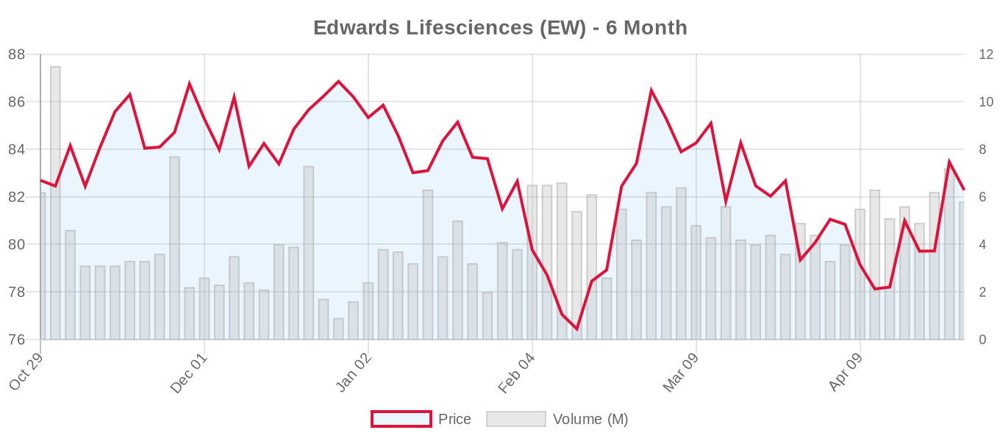
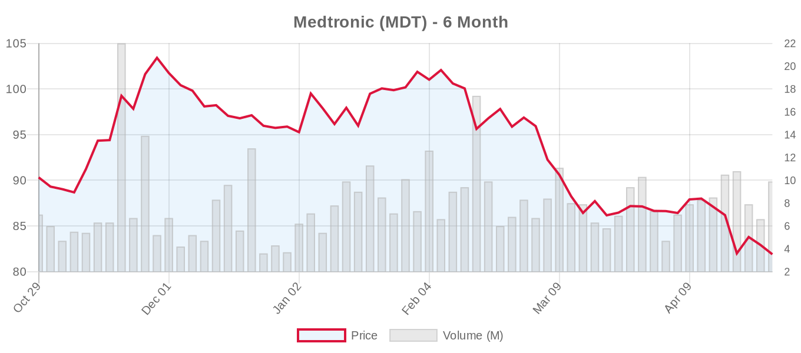
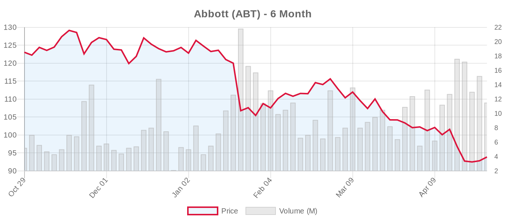
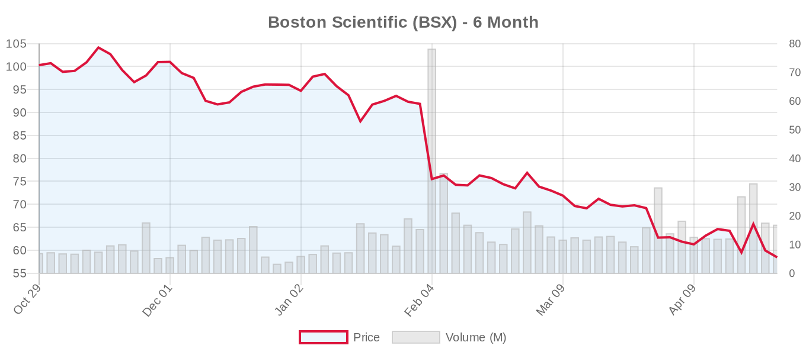
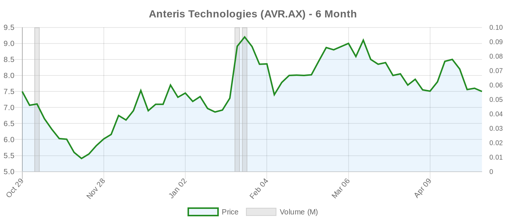

|
||||||||
|
April 29, 2026 By E. Nolan Beckett |
||||||||
|
||||||||
Executive SummaryToday's digest centers on health equity in structural heart disease, with a powerful cluster of studies from the Journal of the Society for Cardiovascular Angiography & Interventions revealing persistent racial and sex disparities across mitral and tricuspid transcatheter therapies — including a sobering COAPT subanalysis showing that Black patients may derive even greater benefit from MitraClip than White patients, yet face barriers to access. In the TAVI space, new data from Japan quantify the cost-effectiveness of TAVI versus medical therapy in elderly patients, while a novel biomarker (type IV collagen 7S) shows promise for risk-stratifying patients after TAVI. Meanwhile, Anteris Technologies cleared a key financial hurdle for its pivotal U.S. DurAVR trial, and a new head-to-head randomized trial comparing Evolut FX versus SAPIEN 3 Ultra RESILIA is actively enrolling. For the clinical audience: this is one of those days where the headlines aren't about a single blockbuster trial but rather a mosaic of evidence that, taken together, tells a critical story. The disparities data — spanning M-TEER for functional MR (nearly 9,500 patients from the STS/ACC TVT Registry), a COAPT racial subanalysis, and the first national-level look at tricuspid TEER outcomes by race — demand attention. Black patients consistently present with more advanced disease, achieve lower procedural success rates, and experience higher complication rates. The question isn't whether these disparities exist; it's whether the structural heart community will build equity into the next generation of trials and care pathways. We also cover the ALERT randomized trial design testing automated EHR notifications for underdiagnosed AS and MR — a pragmatic intervention that could move the needle. On the industry side, Edwards Lifesciences is gearing up for a busy conference season with its CEO speaking at BofA and new pulmonary artery sensor data, even as its stock trades near the bottom of its 6-month range. Today's Key Findings
Aortic Valve (TAVR/TAVI)Blood Pressure Trajectories After TAVITwo companion pieces in the Journal of Hypertension examine blood pressure changes following TAVI and their prognostic implications. While abstracts aren't yet available, this is a clinically important and underappreciated topic: relief of aortic stenosis can unmask or worsen hypertension, and post-TAVI blood pressure management remains poorly standardized. Longitudinal BP trajectories may help identify patients at risk for adverse LV remodeling or cardiovascular events. (Li et al.; Roberts) Type IV Collagen 7S as a Post-TAVI Prognostic BiomarkerIn a single-center prospective cohort of 398 consecutive TAVI patients, Sakamoto et al. found that preprocedural serum P4NP 7S — a hepatic fibrosis marker reflecting venous congestion — independently predicted the composite of all-cause death or HF hospitalization over a median follow-up of 773 days. Patients in the highest tertile faced nearly three-fold the risk (HR 2.90, 95% CI 1.48–5.65) compared to the lowest tertile after multivariable adjustment. Editorial note: This is a single-center study and the biomarker requires validation in larger, multicenter cohorts. However, it aligns with growing recognition that extracardiac congestion profoundly influences post-TAVI outcomes — a reminder that valve intervention alone doesn't fix the syndrome in patients with advanced cardio-hepatic dysfunction. (Heart and Vessels) TAVI Cost-Effectiveness in Elderly Japanese PatientsArai et al. analyzed 45,664 patients aged ≥75 with AS from a Japanese administrative claims database (2018–2021), comparing 2,217 TAVI patients to medically managed controls. Three-year mortality was 12.5% vs. 22.5% (adjusted HR 0.61), with an ICER of ¥11,485,734/QALY (~$76,500 USD at current exchange rates). Important caveats: This is an observational study with inherent selection bias — TAVI patients were likely healthier and better selected than the MT cohort, despite statistical adjustment. The cost-effectiveness figure reflects only a 3-year horizon; longer follow-up with reintervention costs could shift the calculus. Still, these real-world data support TAVI's value proposition in appropriately selected elderly patients, consistent with both ACC/AHA and ESC guidelines recommending TAVI for patients >80 (ACC/AHA) or ≥70 with suitable anatomy (ESC). (Heart and Vessels) TAVI in Rheumatoid Arthritis: No Excess RiskUsing the TriNetX registry, Ramadan et al. compared 1,374 propensity-matched RA+ vs. RA− patients undergoing TAVR. At 30 days, mortality (2.0% vs. 1.5%, OR 1.29, P=NS) and all other endpoints were similar. At 5 years, mortality (23.8% vs. 20.5%, HR 1.12, 95% CI 0.97–1.31) and rates of stroke, MI, and hospitalization did not differ. Clinical relevance: RA patients often have concerns about prosthetic valve endocarditis and immunosuppression-related healing; these data are reassuring, though the study couldn't account for RA disease severity or specific immunosuppressive regimens. (Rheumatology) ICU Utilization After TAVI in JapanA nationwide observational study using the Japanese intensive care patient database examined ICU utilization patterns and clinical outcomes after TAVI. Full abstract is pending, but this speaks to an important health systems question: as TAVI becomes more streamlined (with same-day and next-day discharge protocols gaining traction), understanding which patients truly require ICU-level care has significant resource allocation implications. (Mizobuchi et al., Heart and Vessels) Machine Learning Myocardial Texture Analysis After TAVRA letter in Echocardiography by Dogan refines the clinical interpretation of ML-based myocardial texture analysis for post-TAVR assessment. While details are limited, this sits at the intersection of AI-augmented echocardiography and TAVI surveillance — a space to watch as we grapple with long-term structural valve deterioration monitoring. (Echocardiography) Retraction NoticeA 2016 study comparing propofol vs. dexmedetomidine sedation during TAVI has been retracted from the Journal of Clinical Anesthesia. No details on the reason for retraction are provided. (JCA) Mitral Valve (MitraClip, PASCAL, TMVR)Racial and Sex Disparities in M-TEER for Functional MR — TVT Registry[NOTABLE] Park et al. present one of the largest studies to date examining disparities in mitral TEER outcomes, analyzing 9,441 patients from the STS/ACC TVT Registry (2013–2021) undergoing M-TEER for functional MR. Key findings:
Editorial perspective: The lower procedural success in Black patients and women likely reflects anatomic and disease-stage differences rather than operator bias per se, but the fact that Black patients present with more advanced disease points to upstream disparities in diagnosis, referral, and guideline-directed medical therapy. Under the ESC 2025 guidelines, which elevated TEER for ventricular SMR to Class I (LOE A) based on COAPT criteria, equitable access to this therapy becomes even more consequential. The study can't tell us whether Black patients were less likely to meet COAPT criteria at presentation or whether referral patterns differed, but it raises the question of whether the COAPT selection criteria themselves may inadvertently disadvantage certain populations. (Structural Heart) COAPT Racial and Ethnic Subanalysis[NOTABLE] This subanalysis from the landmark COAPT trial (n=585) examined outcomes by self-identified race/ethnicity. The headline finding is striking: Black patients randomized to MitraClip + GDMT had a 70% relative reduction in death or HF hospitalization versus GDMT alone at 2 years (HR 0.30, 95% CI 0.14–0.61), compared to a 41% reduction in White patients (HR 0.59). Hispanic patients showed no benefit (HR 1.09), but with only 40 patients, this is statistically meaningless. Critical caveats are essential here: Only 88 Black patients and 40 Hispanic patients were enrolled in COAPT — a trial designed to detect differences in the overall population, not subgroups this small. The wider confidence intervals and potential for confounding make these subgroup findings hypothesis-generating at best. The apparent greater benefit in Black patients could reflect more advanced baseline disease (higher event rates in the control arm) rather than a differential treatment effect. P-interaction was 0.06, not meeting conventional significance. That said, the finding that MitraClip produced meaningful MR reduction and mortality/HF benefit in Black patients is clinically important and should motivate aggressive enrollment of underrepresented populations in ongoing trials like PRIMATY. (JSCAI) The ALERT Trial: Automated EHR Notifications for AS and MRBatchelor et al. describe the design of the ALERT study — a multicenter, cluster-randomized trial across ≥5 U.S. hospital systems testing whether automated electronic health record notifications (triggered by echocardiography findings of severe AS or MR) increase the proportion of patients receiving valve intervention or heart team evaluation within 90 days. The trial aims for ≥600 providers and 1,500 patients randomized 1:1, with results expected Q2 2026. Why this matters: We know that severe AS and MR are dramatically underdiagnosed and undertreated, with disparities particularly affecting minorities, women, and rural populations. If a simple EHR alert can close the treatment gap, it would be one of the most cost-effective interventions in structural heart disease. This is pragmatic clinical research at its best — though we should note that provider alert fatigue is real, and the key question is whether notifications translate into action or are simply clicked away. (JSCAI) Tricuspid Valve (TriClip, TTVR)Racial and Ethnic Disparities in Tricuspid TEER[NOTABLE] In the first national-level analysis of T-TEER outcomes by race, Alruwaili et al. used the National Inpatient Sample (2018–2022) to identify 2,815 T-TEER procedures. Black patients (8.5% of the cohort) experienced strikingly higher complication rates:
Editorial note: These findings emerge as the ESC 2025 guidelines have elevated transcatheter TV treatment to Class IIa (LOE A) based on TRILUMINATE, Tri.Fr, and TRISCEND II. It's worth noting that pivotal trials enrolled predominantly White populations — TRILUMINATE was 91% White. If T-TEER is going to be deployed more broadly, these real-world disparities demand investigation. Are the differences driven by later referral, more advanced RV dysfunction at presentation, anatomic factors, comorbidity burden, or institutional experience? The NIS data can't answer these questions, but they set the agenda for the next generation of tricuspid registries and trials. (JSCAI) Jailed CIED Leads After TTVR: A Safety DebateA letter-and-reply exchange in JACC: Clinical Electrophysiology highlights an emerging safety concern: what happens to cardiac implantable electronic device (CIED) leads trapped ("jailed") between a transcatheter tricuspid valve replacement prosthesis and the right ventricular wall? Abouelmagd and Stone urge more caution, while Traynor et al. respond with nuance. This is a real and growing problem — the TVT Registry data on TTVR showed 15.9% new CIED implantation at 30 days, and many TR patients already have pre-existing leads. The interaction between leads and transcatheter TV prostheses (both replacement and repair) is an area where the technology has gotten ahead of systematic evidence. (Abouelmagd & Stone; Traynor et al.) Surgical vs. Transcatheter ComparisonsNo direct head-to-head surgical vs. transcatheter comparison studies were published today, but the disparities data above have important implications for this debate. Lower procedural success rates for M-TEER in certain populations raise the question of whether surgical mitral repair — which has more consistent MR reduction — might be the better option for patients who can tolerate surgery, regardless of race or sex. The ESC 2025 guidelines maintain that surgery remains preferred for primary MR and is a viable alternative for secondary MR with concomitant CABG. The equity question cuts across modalities: if Black patients present later with more advanced disease, neither TEER nor surgery alone can fix the referral pipeline. Device & TechnologyAnteris Clears Financial Hurdle for U.S. DurAVR Pivotal TrialAustralian biotech Anteris Technologies announced it has secured the financial resources needed to advance its pivotal U.S. trial of the DurAVR transcatheter heart valve system. The DurAVR valve features a single-piece ADAPT tissue design (3D-shaped from a single sheet of bovine pericardium) intended to improve hemodynamics and potentially durability. The trial (NCT07194265) is recruiting 1,650 patients and randomizes against SAPIEN and Evolut series valves — a bold head-to-head design. Context: Anteris has been in a precarious financial position (its forward P/E is −3.44), and clearing this hurdle is existentially important. The company's stock (AVR.AX) sits at A$7.50, flat over 6 months but with an analyst target of A$13. This remains a high-risk, high-reward bet on next-generation TAVI valve design. (grafa.com) Transcatheter Closure of PVL After LVAD + AVRA case report describes successful transcatheter closure of a paravalvular leak around an aortic bioprosthesis in a 39-year-old with end-stage DCM and a CorHeart 6 LVAD. Using a retrograde femoral approach with a 10×8mm VSD occluder, the team eliminated the leak, improving the patient's functional status to NYHA II with sustained results at 6 months. While a single case, this highlights the expanding role of transcatheter PVL closure in complex surgical patients where redo sternotomy carries prohibitive risk (STS score 16.2%). (Frontiers in Cardiovascular Medicine) Edwards Lifesciences: Pulmonary Artery Sensor DataEdwards Lifesciences released supporting data for its pulmonary artery pressure monitoring technology, further building its heart failure management portfolio beyond valves. Details are limited in the press coverage, but this fits Edwards' strategic pivot toward comprehensive hemodynamic monitoring — a business that complements its valve franchise by keeping patients in the Edwards ecosystem from diagnosis through long-term management. (MassDevice) Regulatory & PolicyACC REACH Program: Building Research EquityThe ACC's Clinical Trials Research (CTR) program, with its new REACH subcohort focused on structural heart disparities, reported encouraging early results: 94% survey completion, equal sex distribution, 25% Hispanic representation, and high rates of new mentorship (52%), collaboration (81%), and research opportunities (79%). While these are process measures rather than outcomes, building a diverse pipeline of structural heart investigators is foundational to addressing the disparities highlighted in today's other publications. (JSCAI) Disparities in Interventional Cardiology: A Call to ActionProcopi et al. provide a comprehensive review of how sex and race/ethnicity influence outcomes in PCI and TAVR, highlighting that biological differences, structural barriers, and persistent underrepresentation in clinical research all contribute to inequitable outcomes. The review calls for reform in study design, systematic outcome stratification, and structural changes in care delivery. This aligns with growing recognition in the structural heart field that evidence generated primarily in White male populations may not apply equally to all patients — a concern that both ACC/AHA and ESC guidelines acknowledge but have not yet solved. (JSCAI) Industry & MarketEdwards Lifesciences CEO Bernard Zovighian is scheduled to speak at the BofA Securities 2026 Health Care Conference on May 12, with a live webcast and same-day replay. Expect discussion of Edwards' TAVI franchise performance, the PASCAL/TEER competitive landscape, EVOQUE tricuspid replacement commercialization, and the PA sensor expansion. Separately, a racing documentary produced by ABC News highlighted heart valve health awareness — an example of patient-facing education that complements industry efforts to reduce underdiagnosis. Note: The "Tavia Acquisition Corp" SPAC seeking an extension to March 2027 for its deal has no connection to transcatheter aortic valve implantation despite sharing the ticker "TAVI." This is a financial vehicle unrelated to structural heart disease. Financial AnalysisThe structural heart sector is navigating a challenging broader market environment, with most valve industry stocks trading well below their 6-month highs. The standout laggard is Boston Scientific, down a staggering 41.7% over six months — a decline driven by tariff fears, broader medtech de-rating, and competitive pressures across its diversified portfolio. Abbott has also been hit hard (−23.7%), reflecting both structural heart headwinds and the ongoing impact of its nutritional and diagnostics segments on overall sentiment. Medtronic (−9.3%) has held up somewhat better but recently touched new 52-week lows near $79.93, ahead of its June 3 earnings report where the Evolut franchise and cardiac rhythm management performance will be closely watched. Edwards Lifesciences has been the relative outperformer, essentially flat over six months (−0.5%) and trading in a tight range. At $82.28, it sits near the bottom of its recent 5-day range ($79.19–$84.95) but well above its 52-week low of $72.30. The stock's valuation remains stretched at 44.5x trailing earnings but a more reasonable 24.5x forward — reflecting expectations that the TAVI franchise, PASCAL/TEER ramp, and EVOQUE commercialization will drive meaningful earnings growth. Mitsubishi UFJ Trust's stake reduction is routine portfolio rebalancing, not a thesis-changing event. The most consequential financial development today is Anteris Technologies' confirmation that it has cleared the funding hurdle for its DurAVR pivotal U.S. trial. For a company with a $700M AUD market cap and no revenue, trial execution is existential. The stock (A$7.50) has an analyst target of A$13 from a single coverage analyst, but the path from here depends entirely on enrollment pace and early safety/efficacy signals from the 1,650-patient randomized trial. Valve Industry Stocks Edwards Lifesciences (EW)
Medtronic (MDT)
Abbott (ABT)
Boston Scientific (BSX)
Anteris Technologies (AVR.AX)
Private Companies: JenaValve Technology, J Valve Technology, and Meril Life Sciences remain privately held with no public stock data available. Meril's Hydra TAVI system continues generating registry data from multiple European sites (see Clinical Trials section). Market Outlook: The structural heart sector is being weighed down by macro headwinds — tariff uncertainty, medtech sector rotation, and broader risk-off sentiment — rather than fundamental deterioration. All four public companies carry analyst "Buy" or "Strong Buy" ratings with significant upside to consensus targets (17–47% across the group). The catalyst calendar thickens in the coming months: Medtronic earnings June 3, Edwards and Boston Scientific earnings in late July, and anticipated data readouts from several ongoing trials. The ESC 2025 guideline expansions for TAVI (≥70, Class I), TEER for SMR (Class I), and transcatheter tricuspid therapy (Class IIa) represent meaningful TAM expansion that should support medium-term growth for all players in the space. Clinical Trial UpdatesAortic Valve Trials
Mitral Repair Trials
Mitral Replacement Trials
Tricuspid Repair Trials
Tricuspid Replacement Trials
Other Relevant Trials
Social & Conference HighlightsThe JSCAI March 2026 issue appears to be a focused equity edition, with multiple papers on racial and sex disparities across structural heart therapies published simultaneously. This coordinated editorial effort signals that the interventional cardiology community is taking disparities seriously — at least in the literature. The challenge remains translating awareness into action: more diverse clinical trial enrollment, equitable referral pathways, and systematic tracking of outcomes by race, sex, and socioeconomic status. The ACC REACH program and the ALERT trial represent concrete steps, but the scale of the problem — as demonstrated by today's TVT Registry and NIS analyses — demands system-level solutions. Edwards Lifesciences CEO Bernard Zovighian will present at the BofA Securities 2026 Health Care Conference on May 12, with a live webcast available. This will be an important opportunity for investors to hear updated commentary on TAVI market dynamics, the PASCAL competitive position, and Evoque commercialization trajectory. Looking Ahead: Today's equity-focused publications are a clarion call. As the structural heart field expands transcatheter indications — TAVI to younger patients, TEER to Class I for SMR, transcatheter tricuspid therapy to Class IIa — we must ensure that expanded indications translate to expanded access for all populations, not just the populations that dominated our pivotal trials. Tomorrow, we'll be watching for Medtronic's pre-earnings positioning and any additional data drops ahead of a busy spring conference season. — E. Nolan Beckett | The Valve Wire |
||||||||
|
|
||||||||
|
||||||||
|